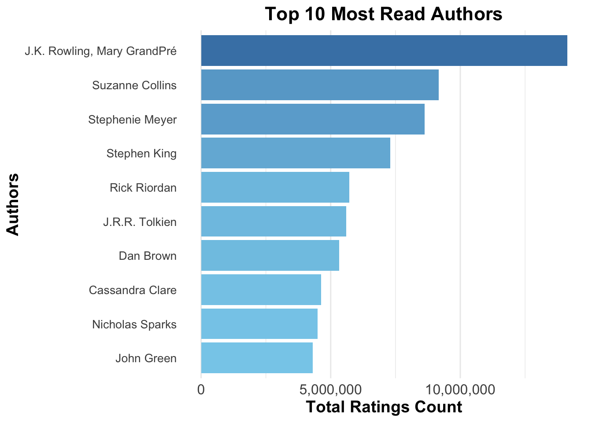

#Read CSV file
books <- read.csv("books.csv")
str(books)
## 'data.frame': 10000 obs. of 23 variables:
## $ book_id : int 1 2 3 4 5 6 7 8 9 10 ...
## $ goodreads_book_id : int 2767052 3 41865 2657 4671 11870085 5907 5107 960 1885 ...
## $ best_book_id : int 2767052 3 41865 2657 4671 11870085 5907 5107 960 1885 ...
## $ work_id : int 2792775 4640799 3212258 3275794 245494 16827462 1540236 3036731 3338963 3060926 ...
## $ books_count : int 272 491 226 487 1356 226 969 360 311 3455 ...
## $ isbn : chr "439023483" "439554934" "316015849" "61120081" ...
## $ isbn13 : num 9.78e+12 9.78e+12 9.78e+12 9.78e+12 9.78e+12 ...
## $ authors : chr "Suzanne Collins" "J.K. Rowling, Mary GrandPré" "Stephenie Meyer" "Harper Lee" ...
## $ original_publication_year: num 2008 1997 2005 1960 1925 ...
## $ original_title : chr "The Hunger Games" "Harry Potter and the Philosopher's Stone" "Twilight" "To Kill a Mockingbird" ...
## $ title : chr "The Hunger Games (The Hunger Games, #1)" "Harry Potter and the Sorcerer's Stone (Harry Potter, #1)" "Twilight (Twilight, #1)" "To Kill a Mockingbird" ...
## $ language_code : chr "eng" "eng" "en-US" "eng" ...
## $ average_rating : num 4.34 4.44 3.57 4.25 3.89 4.26 4.25 3.79 3.85 4.24 ...
## $ ratings_count : int 4780653 4602479 3866839 3198671 2683664 2346404 2071616 2044241 2001311 2035490 ...
## $ work_ratings_count : int 4942365 4800065 3916824 3340896 2773745 2478609 2196809 2120637 2078754 2191465 ...
## $ work_text_reviews_count : int 155254 75867 95009 72586 51992 140739 37653 44920 25112 49152 ...
## $ ratings_1 : int 66715 75504 456191 60427 86236 47994 46023 109383 77841 54700 ...
## $ ratings_2 : int 127936 101676 436802 117415 197621 92723 76784 185520 145740 86485 ...
## $ ratings_3 : int 560092 455024 793319 446835 606158 327550 288649 455042 458429 284852 ...
## $ ratings_4 : int 1481305 1156318 875073 1001952 936012 698471 665635 661516 716569 609755 ...
## $ ratings_5 : int 2706317 3011543 1355439 1714267 947718 1311871 1119718 709176 680175 1155673 ...
## $ image_url : chr "https://images.gr-assets.com/books/1447303603m/2767052.jpg" "https://images.gr-assets.com/books/1474154022m/3.jpg" "https://images.gr-assets.com/books/1361039443m/41865.jpg" "https://images.gr-assets.com/books/1361975680m/2657.jpg" ...
## $ small_image_url : chr "https://images.gr-assets.com/books/1447303603s/2767052.jpg" "https://images.gr-assets.com/books/1474154022s/3.jpg" "https://images.gr-assets.com/books/1361039443s/41865.jpg" "https://images.gr-assets.com/books/1361975680s/2657.jpg" ...
summary(books)
## book_id goodreads_book_id best_book_id work_id
## Min. : 1 Min. : 1 Min. : 1 Min. : 87
## 1st Qu.: 2501 1st Qu.: 46276 1st Qu.: 47912 1st Qu.: 1008841
## Median : 5000 Median : 394966 Median : 425124 Median : 2719524
## Mean : 5000 Mean : 5264697 Mean : 5471214 Mean : 8646183
## 3rd Qu.: 7500 3rd Qu.: 9382225 3rd Qu.: 9636112 3rd Qu.:14517748
## Max. :10000 Max. :33288638 Max. :35534230 Max. :56399597
##
## books_count isbn isbn13 authors
## Min. : 1.00 Length:10000 Min. :1.952e+08 Length:10000
## 1st Qu.: 23.00 Class :character 1st Qu.:9.780e+12 Class :character
## Median : 40.00 Mode :character Median :9.780e+12 Mode :character
## Mean : 75.71 Mean :9.755e+12
## 3rd Qu.: 67.00 3rd Qu.:9.781e+12
## Max. :3455.00 Max. :9.790e+12
## NA's :585
## original_publication_year original_title title
## Min. :-1750 Length:10000 Length:10000
## 1st Qu.: 1990 Class :character Class :character
## Median : 2004 Mode :character Mode :character
## Mean : 1982
## 3rd Qu.: 2011
## Max. : 2017
## NA's :21
## language_code average_rating ratings_count work_ratings_count
## Length:10000 Min. :2.470 Min. : 2716 Min. : 5510
## Class :character 1st Qu.:3.850 1st Qu.: 13569 1st Qu.: 15439
## Mode :character Median :4.020 Median : 21156 Median : 23832
## Mean :4.002 Mean : 54001 Mean : 59687
## 3rd Qu.:4.180 3rd Qu.: 41054 3rd Qu.: 45915
## Max. :4.820 Max. :4780653 Max. :4942365
##
## work_text_reviews_count ratings_1 ratings_2 ratings_3
## Min. : 3 Min. : 11 Min. : 30 Min. : 323
## 1st Qu.: 694 1st Qu.: 196 1st Qu.: 656 1st Qu.: 3112
## Median : 1402 Median : 391 Median : 1163 Median : 4894
## Mean : 2920 Mean : 1345 Mean : 3111 Mean : 11476
## 3rd Qu.: 2744 3rd Qu.: 885 3rd Qu.: 2353 3rd Qu.: 9287
## Max. :155254 Max. :456191 Max. :436802 Max. :793319
##
## ratings_4 ratings_5 image_url small_image_url
## Min. : 750 Min. : 754 Length:10000 Length:10000
## 1st Qu.: 5406 1st Qu.: 5334 Class :character Class :character
## Median : 8270 Median : 8836 Mode :character Mode :character
## Mean : 19966 Mean : 23790
## 3rd Qu.: 16024 3rd Qu.: 17305
## Max. :1481305 Max. :3011543
##
Summarizing Read Counts by Author
most_read_authors <- books %>%
group_by(authors) %>%
summarize(
total_ratings = sum(work_ratings_count, na.rm = TRUE),
num_books = n() #Count the number of books per author
) %>%
arrange(desc(total_ratings))
head(most_read_authors, 50)
## # A tibble: 50 × 3
## authors total_ratings num_books
## <chr> <int> <int>
## 1 J.K. Rowling, Mary GrandPré 14126791 8
## 2 Suzanne Collins 9161124 9
## 3 Stephenie Meyer 8631937 11
## 4 Stephen King 7297834 60
## 5 Rick Riordan 5717999 22
## 6 J.R.R. Tolkien 5602790 6
## 7 Dan Brown 5332589 7
## 8 Cassandra Clare 4631019 13
## 9 Nicholas Sparks 4501871 19
## 10 John Green 4312589 4
## # ℹ 40 more rows
most_read_authors = ggplot(head(most_read_authors, 10), aes(x = total_ratings, y = reorder(authors, total_ratings))) +
geom_bar(stat = "identity", aes(fill = total_ratings), show.legend = FALSE) +
labs(
title = "Top 10 Most Read Authors",
x = "Total Ratings Count",
y = "Authors"
) +
scale_fill_gradient(low = "red", high = "darkred") + # Gradient color
theme_minimal() +
theme(
plot.title = element_text(size = 16, face = "bold", hjust = 0.5), # Center and bold title
axis.text.y = element_text(size = 10), # Adjust font size for 10 authors
axis.text.x = element_text(size = 12),
axis.title = element_text(size = 14, face = "bold"), # Bold axis labels
panel.grid.major.y = element_blank() # Remove y-axis gridlines
) +
scale_x_continuous(labels = scales::comma)
print(most_read_authors)

ggsave("report visualizations/most_read_authors.png", plot = most_read_authors, width = 10, height = 6)